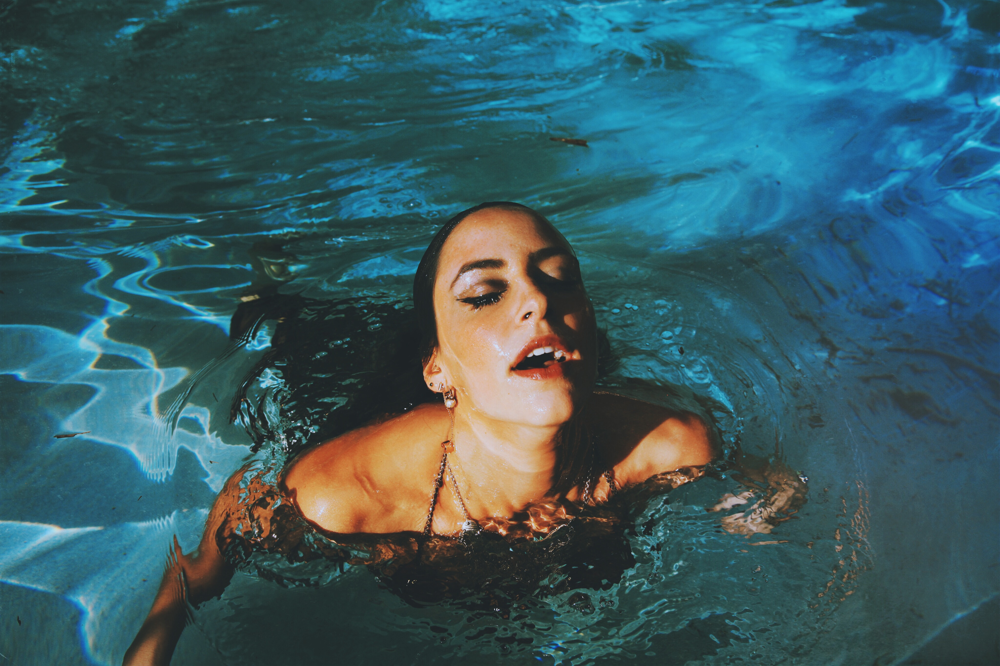
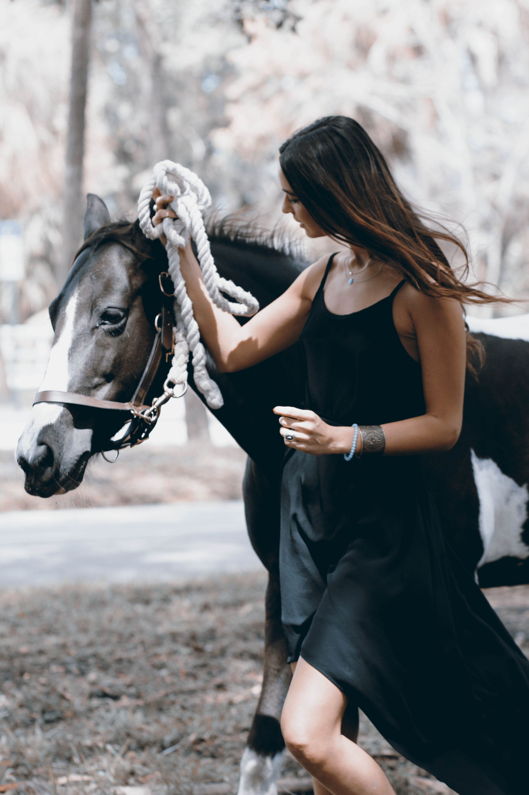

Anbe Baccam is a photographer, currently residing in New York City. Hailing from Saigon, Vietnam he moved to the United Stated when he was 12 years old. Anbe graduated from Florida International University with a bachelor degree of arts. His main focus has always been in photography. Baccam's love for photography came about at a young age, but with more experience and time, it became his life and obsession. For Baccam, photography is more than just an attempt to capture a perfect moment or a perfectly posed subject, for him it is's a visual map of experiences and feelings.